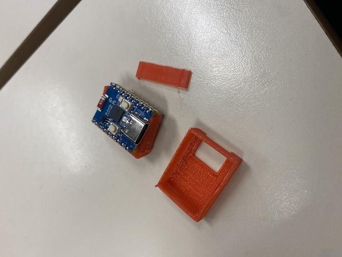
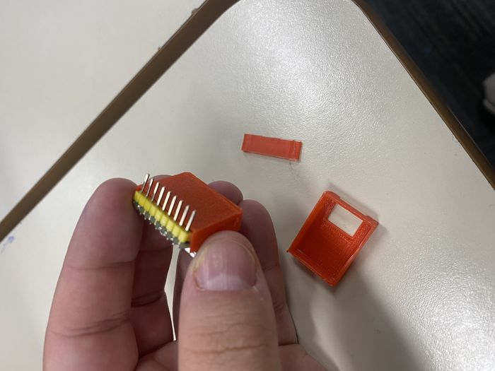
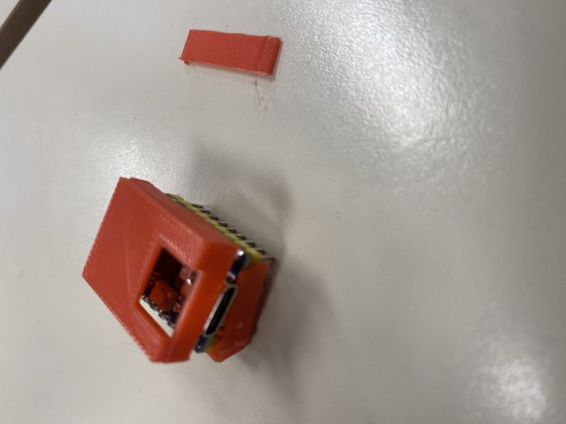
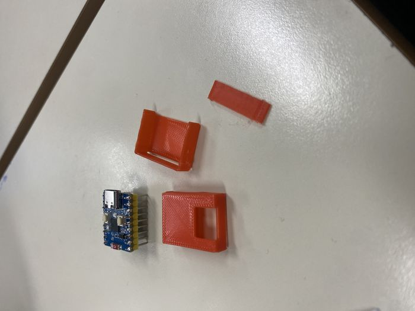

Prototype 01 // FAIL
The brave little disaster.
Everything that could go wrong in a first print, did. Walls snapped. Pin slots too tight. No lid. No ventilation. Still — you have to start somewhere.
Date26/05/2026
Print time12m 57s
Material3.02g
Cost$0.09
ResultFail




What happened
The very first CAD-to-print iteration. Rough measurements from the ESP32-C3 Zero datasheet — but no accounting for printer tolerance or the realities of FDM layer thickness.
Print orientation was wrong, walls printed with the grain of weakness and snapped under any pressure. Even if the walls held, the board still didn't fit inside, and the GPIO pin slots were too tight to seat properly.
And of course: no lid, no ventilation. A humbling reminder that 3D design is not "draw box, print box."
🟢 Pros
- Fast print time — 12m 57s
- Low cost — $0.09
- Established baseline dimensions
- Taught us to measure the board
🔴 Issues identified
- Wrong print orientation
- Walls too thin — snapped on handling
- Board didn't fit inside the case
- GPIO pin slots too small for headers
- No ventilation openings
- No lid or closure mechanism
🛠️ Planned for P2
- Two-piece design with removable lid
- Thicker walls (1.2mm → 2mm)
- Increased internal tolerance
- Correct print orientation
- Begin button-hole positioning